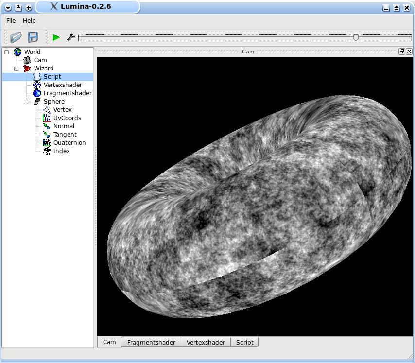

This tutorial is not only Lumina specific and is about generating procedural noise with
GLSL. This algorithms are similar or different from other well known like "Perlin Noise"
1. Random
What is noise? The best expample is the snow on a TV. Each pixel is set with a random
value. But each photo of that screen looks different from a other. In reality there is a
simple answer for that problem: Record that noise to a video tape and take photos from
the freeze image and each will look like the other...
When we want to use random / noise to describe materials it is important that the
randomnumbers are reproducible. This numbers aren't true randomnumbers because there is
no random.
How to create good and reproducible random numbers?
That is a big problem. Always known are only the inputs. It's a position in a
N-dimensional space. A good working formula for GPUs is:
random = fract(sin(in.x * 12.9898 + in.y * 78.233.......) * 43758.5453);
this will be compiled to a few instructions: The first step is to combine all input
dimensions to one value. That is only a simple dot product. The sin() cos() or tan()
(all three are good) is the second instruction. The multiplication with a big value the
third and fraction the last.
The noise algorithms samples the pseudo randomnumbers in regular intervals, that will
result in an undersampling, which produce together with the fraction of sin() random
numbers
that are good enough for graphics. (but not for cryptographic)
This is a simple random fragmentshader:
float rand(vec2 co){
return fract(sin(dot(co.xy ,vec2(12.9898,78.233))) * 43758.5453);
}
void main(void){
gl_FragColor = rand(gl_TexCoord[0].xy);
}
It creates a TV like snow. The interval is from 0.0 to 1.0 (not like the noise(gentype)
function from GLSL that has a range from -1.0 to 1.0 but returns on many cards 0.0)
2. Noise
The random pixels aren't a material. To create on we have to undersampling the random
numbers:
float rand(vec2 co){
return fract(sin(dot(co.xy ,vec2(12.9898,78.233))) * 43758.5453);
}
float noise(vec2 co){
return rand(floor(co * 128.0));
}
void main(void){
gl_FragColor = noise(gl_TexCoord[0].xy);
}
That looks like a nearest filtered noise texture. The next step is adding a simple
bilinear filter:
vec4 rand(vec2 A,vec2 B,vec2 C,vec2 D){
vec2 s = vec2 (12.9898,78.233);
vec4 tmp = vec4( dot(A,s),dot(B,s),dot(C,s),dot(D,s));
return fract(tan(tmp) * 43758.5453);
}
float noise(vec2 coord,float d){
vec2 C[4];
C[0] = floor( coord * d)/d ;
C[1] = C[0] + vec2(1.0/d ,0.0 );
C[2] = C[0] + vec2(1.0/d ,1.0/d);
C[3] = C[0] + vec2(0.0 ,1.0/d);
vec2 p = fract(coord * d);
vec2 q = 1.0 - p;
vec4 w = vec4(q.x * q.y, p.x * q.y, p.x * p.y, q.x * p.y);
return dot(vec4(rand(C[0],C[1],C[2],C[3])),w);
}
void main(void){
gl_FragColor = noise(gl_TexCoord[0].xy,128.0 );
}
This shader is a littlebit optimized for vector based GPUs. "cgc" will compile that code
to 29 instructions.
3. Better filtered noise
The previous implementation lacks in filteringquality if the procedural material is
undersampled by the rasterizer. A solution is, to add only a noise octave only if it
will be oversampled by the rasterizer. The calculation is exactly the same like for
calculating a mipmap level. This means that filtered noise has the same anisotropic
filtering problems like a texture.
vec4 rand(vec2 A,vec2 B,vec2 C,vec2 D){
vec2 s=vec2(12.9898,78.233);
vec4 tmp=vec4(dot(A,s),dot(B,s),dot(C,s),dot(D,s));
return fract(sin(tmp) * 43758.5453)* 2.0 - 1.0;
}
float noise(vec2 coord,float d){
vec2 C[4];
float d1 = 1.0/d;
C[0]=floor(coord*d)*d1;
C[1]=C[0]+vec2(d1,0.0);
C[2]=C[0]+vec2(d1,d1);
C[3]=C[0]+vec2(0.0,d1);
vec2 p=fract(coord*d);
vec2 q=1.0-p;
vec4 w=vec4(q.x*q.y,p.x*q.y,p.x*p.y,q.x*p.y);
return dot(vec4(rand(C[0],C[1],C[2],C[3])),w);
}
void main(void){
float level= -log2
(min(length(dFdx(gl_TexCoord[0].st)),length(dFdy(gl_TexCoord[0].st))));
level = min(level,13.0); //limit the level to avoid slowness
float n = 0.5;
for(int i = 3; i< level;i++){ //3 is the lowest noise level
n += 0.12 * noise(gl_TexCoord[0].xy, exp2(i));
}
gl_FragColor = n;
}

A bilinear filtered noise with mipmap like filtering. Notice the washed out structure on
the tilted surface. Only an anisotropic filtering algorithm would help.
Now it's possible to add a trilinear like filtering by modifying the main function:
void main(void){
float level= -1.0 -log2
(min(length(dFdx(gl_TexCoord[0].st)),length(dFdy(gl_TexCoord[0].st))));
//-1.0 is a bias shift to avoid flickering
level = min(level,16.0); //limit the level. Equalient to a 65536x65536 texture
float n = 0.5;
for(int i = 3; i< level;i++){
n += 0.12 * noise(gl_TexCoord[0].xy, exp2(i));
}
n += 0.12 * noise(gl_TexCoord[0].xy, exp2(floor(level)+1.0)) * fract(level);
// add the last level multiplied with the fraction of the
// level calculation for a smooth filtering
gl_FragColor = max(0.0,sin (n* 12.0))* vec4(0.3,0.8,0.4,0.0) + vec4
(0.3,0.3,0.5,0.0) * n;
}
4. Texture based noise
The previous noise version aren't very performant. Using textures has some advantages
like working anisotropic filtering or four independent values. The input texture should
be a small texture (smaller textures will be better cached). This small texture can be
generated easily with a small program or gimp:
The shader uses parts from the previous version:
uniform sampler2D random;
void main(void){
float level= -0.5 -log2
(min(length(dFdx(gl_TexCoord[0].st)),length(dFdy(gl_TexCoord[0].st))));
//-0.5 is a bias shift to avoid flickering
level = min(level,20.0); //limit the level. Equalient to a 1Mx1M texture
vec4 n = vec4(0.5, 0.5, 0.5, 1.0);
vec2 coords = gl_TexCoord[0].xy / 8; // note1
for(int i = 3; i< level;i++){
n += 0.32 * (texture2D(random, coords)-0.5) ;//-0.05;
coords *= 2.0;
}
n += 0.32 * (texture2D(random, coords)- 0.5) * fract(level);
gl_FragColor = n;
}
note1: The mipmap levels 3,4 and 5 don't wrap correctly, because only a part of the
texture is used for this low resolution maps. The best solution is to start the for loop
with log2(texture_size) and remove the divisor. The low frequency part can be easily
replaced by a 64x64 texture with mipmaps.
For the GF8 it's a good idea to use a anisotropic filter. The 2x AF would be priceless,
because the TMUs are able to filter 2 bilinear samples at the same time.